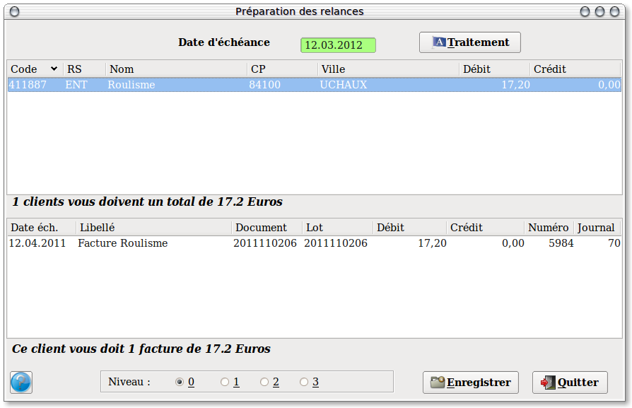

~ Comptabilité Laurux ~

~ Comptabilité Laurux ~ |
|
|
|

L'écran se divise en deux parties. La partie haute contient les comptes clients qui vont etre relancés et la partie basse contient, pour chacun des clients, les écritures qui apparaitront sur la lettre de relance.
Il s'agit bien ici d'une préparation car vous allez pouvoir non seulement gérer les clients pour lesquels vous souhaitez imprimer une lettre de relance, mais aussi le détail des factures qui devront apparaitre sur ces lettres.
En premier saisir la date d'échéance puis cliquer sur le bouton "Traitement". L'ensemble des comptes qui recevront une lettre de relance sont traités et apparaissent dans la partie haute de l'écran.
Si vous cliquez sur un des comptes clients, vous verrez apparaitre le détail des factures relancées ainsi que le niveau de relance tout en bas de l'écran.
Vous pouvez maintenant effectuer trois choses.
Premierement, dans la partie haute, en double cliquant sur la ligne concernée, vous pouvez supprimer un compte client pour lequel vous ne souhaitez pas envoyer de lettre de relance.
Deuxiemement, dans la partie basse, vous pouvez de la mêe facon supprimer des lignes de factures.
Troisiemement, vous pouvez modifier le niveau de relance en cliquant sur le bouton approprié et en n'oubliant pas, ensuite, d'enregistrer votre modification.
----------------------------------------------------------------------------------------------------------------------